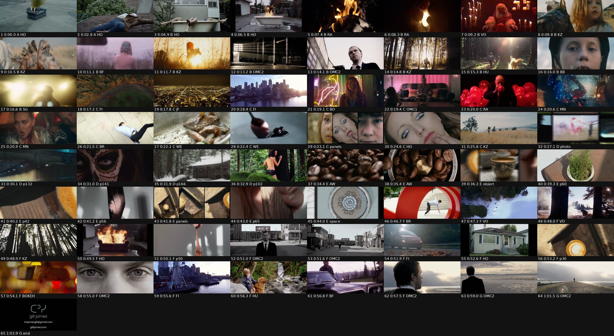

68 s · 65 shots · seven chapters · cut to lost coffee, "to go" (re-edited draft audio)
download the video · full shot list
| A hook 0:00-0:04.9 | Armchair on the tennis court, then the sleepwalker on the roof (Sleepwalker). Two long holds. |
| B film build 0:04.9-0:17.2 | Gill's narrative work: roof → bathtub → bathtub on fire → burning record → silhouette kiss → candles → faces (Weird Kid, Backward Fall) → rearing horse (held) → light rays → eyeline into the sun → flares → whip. |
| C peak one 0:17.2-0:27.0 | Range: aerial → aerial → skyline, neon → pink → red, glass, dance, breakdance, food, the spoon circle. A three-face triptych opens out to one face, then a wide calm field. |
| D photo 0:27.0-0:34.4 | Wall of 15 stills → dive into the pink smoke → tunnel lights, sugar skull, snow cabin, forest. |
| E object / space 0:34.4-0:46.7 | Coffee beans → grinder circle → wall of 27 joio.co objects → dive into the speckled cup → moss cup, latte tray, paddle shadow → carved-tray triptych → wood grain → spatial boards → dive into the circular plan. |
| F peak two 0:46.7-0:59.0 | Plan circle → red ring (graphic match) → snow aerial, forest, fire, a joio spoon, streets, house, latte from above, rear-view eyes → eyes, wheel, waterfall → face. |
| G release 0:59.0-1:07.6 | Beach walk, the lone figure slowed down, then the ᑕᐣᓯ end card (ᑕᐣᓯ large in mint, name, contact on two well-spaced lines). |
Concept: A wall of work, then a dive in. The reel opens on Gill's strangest images, builds through Gill's own narrative films, and peaks on the commercial range. Then the music drops out and the reel dives into the stills, the joio.co objects and the spatial boards, the way a camera would. It peaks again and releases on the beach before the ᑕᐣᓯ end card.
Music: Lost Coffee, "To Go". It is the only track of Gill's on the box: no Mothers Moniker or other Lost Coffee audio was found, and I didn't download anything new. To get a real arc out of a mellow loop, the track is re-edited into a 67.5 s version from four sections of the original:
· intro bars 5-15 (12.9-39.9 s)
· quiet intro bars 1-3 (3.1-10.4 s), used as the breakdown
· bars 9-13 (22.7-35.0 s), the lift back in
· bars 34-41 (84.2-105.0 s), the last full bars and the natural decay
The track repeats a 5-bar harmonic cycle (chroma similarity 0.99-1.00 between bars five apart). Every splice joins bars at the same point in that cycle, with a 30 ms crossfade, so the harmony never jumps. Only the texture changes, and that change is what makes the drop and the lift.
One frame: Everything sits inside the 2.39 matte: film, stills, products, panels and boards. No 16:9 breakouts and no boxes. One grain plate runs over every frame, film and still alike. Product and still photos get a light softening and highlight roll-off so they sit with the film plates.
Stills as footage: Stills never sit static. Each one is a virtual camera move with eased acceleration and motion blur on fast moves: a dolly along a wall, a push, a tilt down a vertical object, or a pan. Each stills chapter opens on a wall of many tiles inside 2.39, drifts along it, and dives into one tile until it fills the frame and keeps going into its detail. Then it cuts through a few singles. Hand-held casual phone shots only appear as small tiles in the wall; the singles are the best-lit, cleanest product photos.
Cutting: Cuts follow the music's energy, not a metronome:
· long holds in the quiet hook and release
· about 0.8 s average in the build, 0.7 s in the peaks, with 0.3-2.7 s variety
· matches on pose, object, light, colour, shape, eyeline and action; whips at the build-to-peak handoff
Chapter type is small lowercase in the lower matte with a mint, cyan or red dot (film, photo, object, space), so it never interrupts the picture.

| Pacing and rhythm; cuts mechanical, just on the beat | Cut density now follows the music: 2.5 s holds in the hook, 0.7-0.8 s in the builds and peaks, 1.4-1.5 s in the stills and object chapters, about 2.9 s in the release. Durations run from 0.29 s to 3.67 s (half and full beats mixed), not a fixed grid. |
| No story or flow; mediums alternate randomly | Seven chapters with an arc (hook, build, peak, breakdown into photo, objects and space, second peak, release). Each medium has its own chapter, and every chapter boundary is a match or a whip, not a jump. |
| Opening doesn't hook | Opens on the armchair alone on the tennis court and the sleepwalker on the roof (Sleepwalker), held over the quiet intro. |
| Stills and products feel like a slideshow | Walls of many tiles, then a camera dive into one tile, then singles as camera moves with motion blur. Same matte and same grain as the film. They enter and leave on matches: field → wall, grinder → cup, plan circle → red ring. |
| Breakouts, boxes and mixed split styles | One 2.39 frame for everything. The only multi-panel layouts are two clean, symmetric triptychs (three faces; three carved trays) with an animated reveal. |
| Casual hands-holding-cups shots | Only as small tiles in the object wall. The singles are the moss cup, latte trays, paddle shadow, wood grain, spoon in shadow and the speckled cup. |
| Shot choices aren't Gill's best; high-energy clips fight the mellow track | Re-audited for distinctive frames, with Gill's narrative and personal work leading (Sleepwalker, Weird Kid, Verona's Obsession, Repeat, Phantoms & Friends, Backward Fall). Cut: gym ropes, warehouse sprint, sword fight, the corridor run. |
| Music mismatch | The same track, re-edited so it has a real drop and lift (see the edit plan). The energy comes from the cutting and the matches rather than from aggressive clips. |